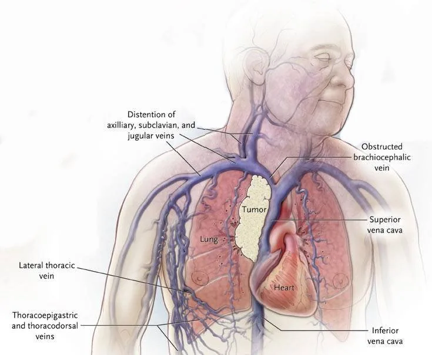

Expanded Nursing Uganda Explanation
Hemorrhage. should be understood beyond a short definition. Link the concept to patient history, focused assessment, common risks, nursing priorities, documentation and evaluation of outcomes.
01 Hemorrhage
Hemorrhage, or profuse bleeding, can occur from major blood vessels and can be a frightening event for patients and their caregivers.
However, hemorrhage is often predictable and requires proactive management, such as ensuring necessary medicines are available in the home care setting for emergencies.
02 Causes of Hemorrhage.
- Catastrophic bleeding from tumor erosion : Hemorrhage can occur when tumors erode into nearby blood vessels, especially in areas such as the head and neck, stomach, pelvis, bladder, or lungs. Tumors infiltrating blood vessels can lead to significant bleeding.
- Bleeding from oesophageal varices in cirrhosis : Patients with advanced liver disease, particularly cirrhosis, may develop oesophageal varices. These are enlarged veins in the esophagus that can rupture and cause torrential bleeding.
- Blood-clotting disorders: Palliative patients may have underlying bleeding disorders, such as abnormalities in platelet number and function or reduced clotting factors. These conditions can impair the blood’s ability to clot properly and increase the risk of hemorrhage.
- Low platelet levels in malignancies and HIV : Certain malignancies, such as bone marrow infiltration by cancer cells, can result in decreased platelet production or destruction, leading to low platelet levels (thrombocytopenia). HIV infection can also cause thrombocytopenia, further increasing the risk of bleeding.
03 Assessment and management of hemorrhage in palliative care patients
- The first rule of management is to ensure that the patient is never left alone until the bleeding is under control. Immediate attention and support are crucial during a hemorrhagic episode.
- If there is a risk of bleeding, anticoagulants such as warfarin should be either stopped or maintained at the lowest effective doses to minimize the potential for excessive bleeding.
- Review and reassess other medications that could contribute to bleeding. If these medications are not essential for symptom control, they should be discontinued to reduce the risk of hemorrhage.
- Consider referring the patient for radiotherapy in specific cases: a . Hemoptysis (coughing up blood) from lung tumors. b . Bleeding from Kaposi’s sarcoma (KS) and fungating tumors. c . Bleeding from head and neck tumors. d . Hematuria (blood in urine) due to bladder cancer. e . Rapidly growing erosive tumors.
- If the patient has a history of smaller bleeds, consider administering tranexamic acid in a dose of 0.5mg to 1g, given two to three times a day (bd/tds), if it is available. Tranexamic acid helps in reducing bleeding.
- For surface bleeding from tumor areas, the use of gauze soaked in adrenaline (1ml) or crushed tranexamic acid applied topically can be considered to control bleeding.
- Isolated bleeding vessels may be amenable to surgical ligation, which involves tying off or closing the bleeding blood vessels surgically.
- In severe cases where hemorrhage may lead to a terminal event, various measures can be implemented: a . Keep dark towels nearby for the family, as blood can appear to be of a much larger volume on white or pale surfaces. This helps manage the emotional impact of the bleeding event. b . Sedation with benzodiazepines, such as diazepam (10 mg orally or rectally), may be administered to alleviate anxiety and fear during catastrophic bleeding events. However, it is essential to note that the rapid progression of bleeding may limit the effectiveness of sedation.
When managing hemorrhage in children, particularly those with hematological malignancies, the following approaches should be considered:
- Aim for rapid and complete sedation using benzodiazepines and/or opioids, if available, administered through parenteral routes. This helps ensure the child remains calm and comfortable during the episode.
- If the child is able to swallow, administer double the usual dose of morphine, with or without diazepam, as prescribed. This helps manage pain and anxiety associated with severe nose bleeds (epistaxis).
- In cases where the child is unable to swallow, administer large doses of morphine and diazepam rectally. The recommended rectal valium dose is as follows: If the child’s weight is unknown: 5mg for children below 3 years, and up to 10mg for children older than 3 years.
- If the child’s weight is known: Administer a dose of 0.5–1mg/kg up to a maximum of 10kg.
04 Superior Vena Cava Obstruction (SVCO)
Superior vena cava syndrome (SVCS) is a condition where the superior vena cava, which carries blood from the head, neck, and upper thorax to the right atrium, becomes obstructed.
This obstruction can be caused by external compression from a tumor or lymph node, direct invasion of the vessel wall by a tumor, or thrombosis of the vein due to a blood clot. When the vein is obstructed, it impairs blood flow to the right atrium and the upper drainage above the thorax.
SVCS is most commonly seen in lung cancers, particularly small cell carcinoma, accounting for about 75% of cases. Lymphoma accounts for about 15% of cases, and other cancers such as breast, colon, esophagus, and testicular cancer can also cause SVCS. If left untreated, SVCS can progress rapidly, leading to complications such as thrombosis, cerebral edema, and even death within a few days. The respiratory, cardiac, and central nervous systems are always affected by this condition.
05 Signs and symptoms of SVCS
- Respiratory system : Shortness of breath, dyspnea, cyanosis, cough, hoarseness, stridor, and dysphagia.
- Central nervous system : Mental status changes, headache, dizziness, blurred vision, syncope, and seizures.
- Cardiac system: Tachycardia, chest pain, and hypotension.
- Swelling of the face, upper body, and arms
- Dysphagia (difficulty swallowing) Some patients may describe a sensation of drowning. SVCO is commonly seen in patients with tumors in the mediastinum, such as bronchial carcinoma, breast cancer, and lymphoma.
- Physical examination may reveal signs such as edema of the face, arm, and upper chest, dilated veins in the upper part of the thorax, shoulders, and arm, jugular venous distension, and engorged conjunctiva .
- Late signs may include pleural effusion, pericardial effusion, and stridor.
06 Assessment and Management.
Assessment
- Physical examination may reveal engorged conjunctivae, periorbital edema, dilated neck veins, and collateral veins on the arms and chest wall.
- Late signs may include pleural effusions, pericardial effusion, and stridor.
Management of Superior Vena Cava Obstruction (SVCO):
Aim
In advanced cases, the primary goal is to provide relief from acute symptoms.
- Relief of Acute Symptoms : High-dose Corticosteroids: Administer corticosteroids, such as dexamethasone, in high doses (e.g., 16mg PO/IV). These help reduce inflammation and alleviate symptoms.
- Radiotherapy : If available, consider urgent radiotherapy to target the underlying cause of SVCO, such as tumors or lymph nodes causing compression. This can help alleviate the obstruction and improve blood flow.
- Symptomatic Management: Dyspnea : Provide symptomatic relief for dyspnea (shortness of breath) using medications like morphine (e.g., 5mg every 4 hours) and/or benzodiazepines. These medications help alleviate anxiety and improve breathing comfort.
- Cough : Address the cough by using appropriate medications, such as cough suppressants or expectorants, as recommended by a healthcare professional.
- Dysphagia : If dysphagia (difficulty swallowing) is present, work with a speech therapist to develop strategies and exercises to improve swallowing function.
- Supportive Care : Patient Positioning : Keep the patient in an elevated or sitting position, as this can help improve venous return and reduce symptoms.
- Oxygen Therapy : Administer supplemental oxygen if needed to alleviate dyspnea and improve oxygenation.
- Calm Environment: Create a calm and soothing environment for the patient, which can help reduce anxiety and improve overall comfort.
- Multidisciplinary Approach: Collaborate with a multidisciplinary team, including oncologists, palliative care specialists, and supportive care professionals, to provide comprehensive management and support for the patient’s physical, emotional, and psychosocial needs.
- Psychological Support: Offer emotional support to the patient and their family, addressing their concerns and providing guidance throughout the treatment process.
- Close Monitoring and Follow-up: Regularly monitor the patient’s clinical status, including vital signs, symptom progression, and response to treatment.
- Schedule follow-up appointments to assess treatment efficacy, manage symptoms, and make any necessary adjustments to the management plan.
07 Nursing Uganda Clinical Lens
Use Epistaxis as a practical nursing topic, not only a memorized definition. Study medicines through indication, safety checks, expected response, adverse effects and patient teaching.
- What to understand first: define epistaxis, identify the normal or expected pattern, then explain what changes when the patient is unwell.
- Why it matters in care: the nurse must recognize risk early, explain findings clearly, document accurately and know when to escalate.
- How to revise it: connect each point to assessment, nursing diagnosis or care problem, intervention, rationale and evaluation.
08 Assessment Guide
- Diagnosis or reason for the medicine, allergies, pregnancy status and previous reactions.
- Current medicines, herbal products, renal or liver risk and baseline observations.
- Dose, route, timing, dilution, expiry date and documentation requirements.
09 Nursing Priorities, Rationales and Outcomes
- Apply the rights of medication administration and facility policy.
- Monitor therapeutic response and class-specific adverse effects.
- Educate the patient on purpose, timing, missed doses, warning symptoms and adherence.
The rationale for these priorities is patient safety: nursing actions should prevent deterioration, reduce discomfort, support recovery and create clear evidence for the next caregiver.
- Expected outcome: The medicine produces the intended effect without preventable harm, and administration is accurately documented.
10 Patient Teaching and Revision Check
- Explain epistaxis in simple language the patient or caregiver can repeat back.
- Teach warning signs, medicine or follow-up instructions, hygiene or lifestyle points where relevant.
- For exams, prepare a short answer using: definition, causes or risk factors, signs, assessment, management, complications and prevention.
- For ward practice, document baseline findings, actions taken, patient response and the plan for review.
Illustrations and Diagrams (3)


Related Video Lectures
Watch nursing lecture videos on YouTube for this topic. Opens in a new tab.
Watch on YouTubeExternal link: YouTube may use its own cookies and terms. Nursing Uganda is not affiliated with YouTube.